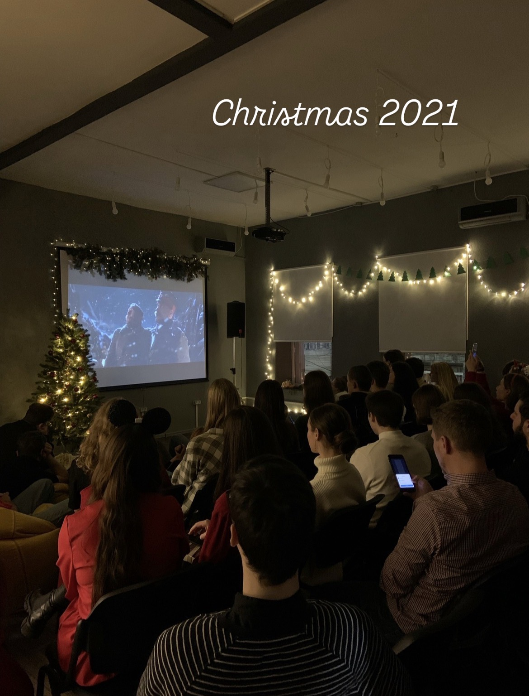
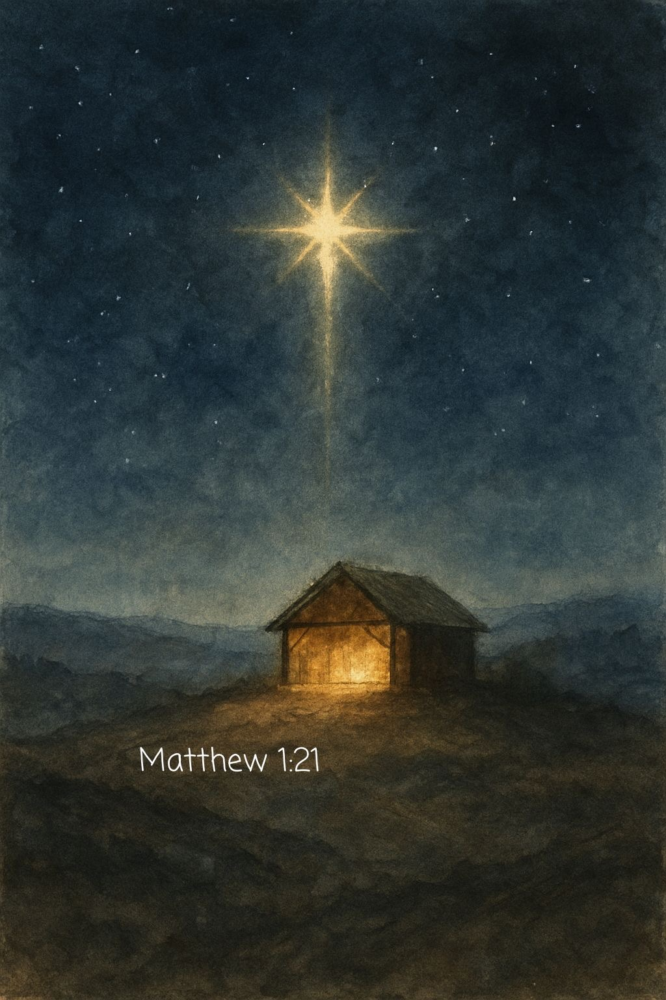

Таня Бура
Таня Бура
Різдво всередині
Світло Різдва серед війни й подяка партнерам за спільне служіння.
Я пам’ятаю Різдво 2021го — ми гучно святкували його кілька разів. Спочатку зі студентами і волонтерами, тоді з командою (моя улюблена частина — разом вранці дивитись мультики), тоді з друзями та церквою. Пам’ятаю, як сяяли вітрини, як міста змагались у тому, чия ялинка прикрашена більш пишно, як натовп в центрі міста запалював бенгальські вогні.
Архівний лист. Події й молитовні потреби описані станом на час написання.

Четверте «темне» Різдво

«Світло з’являється навіть у темряві — і темрява не може його поглинути.»
— Івана 1:5
Це вже четверте «темне» Різдво в Україні. І через кількість болю і втрат ця темність часом здається бездонною.
Але світло ж найкраще видно саме у темряві.
Дякую, що зі мною
Я вдячна Богу за можливість бути в Україні в цей час, знаю, що не всі її мають.
Вдячна, що можу продовжувати служіння тут. І в цьому — твоя велика частка.
Дякую, що довгий час віриш у це служіння і підтримуєш, вкладаєш свої молитви, думки і ресурси. Дякую, що зі мною в моїх різних статусах, на різних посадах і в різних містах. Дякую, що можемо разом нести звістку про Різдво до студентів.
Світло у темряві світить, і саме в темряві воно відчутне і потрібне, як ніколи.
Стати партнером служіння
Це служіння тримається на команді молитовних і фінансових партнерів. Ваш внесок допомагає нести Євангеліє, практичну турботу й надію студентам, дітям і молоді України.
Підтримати служіння Тані
Через give.cru.org
Сайт служіння
Більше про студентське служіння
Христос ся Рождає, славімо Його!
— Таня Бура · Грудень 2025
Таня Бура
З благословенням у Христі
Студентське служіння · Україна для Христа